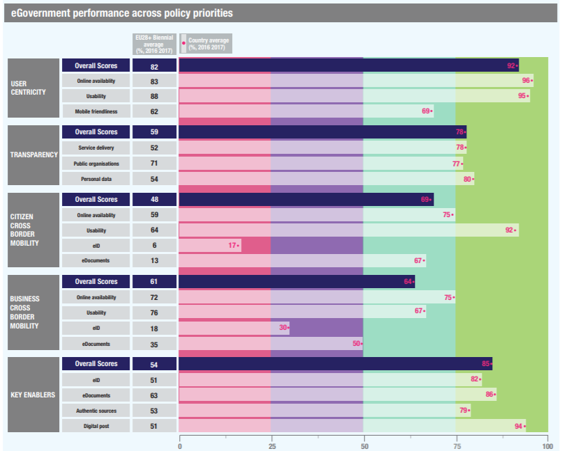

ISA2


Digital Government Factsheet 2019
Switzerland
ISA2
Digital Government Highlights 6
Digital Government Political Communications 7
Digital Government Legislation 13
Digital Government Governance 16
Digital Government Infrastructure 22
Digital Government Services for Citizens 27
Digital Government Services for Businesses 35
Population: 8 484 130 inhabitants (2018)
GDP at market prices: 597 314 million Euros (2017)
GDP per inhabitant in PPS (Purchasing Power Standard EU 28=100): 156 (2017)
GDP growth rate: 2.5% (2018)
Inflation rate: 0.9% (2018)
Unemployment rate: 2.5%* (2018)
General government gross debt (Percentage of GDP): 29.7%* (2018)
General government deficit/surplus (Percentage of GDP): 1.28%** (2017)
Area: 41 250 km²***
Capital city: Bern
Official EU language: German, French, Italian
Currency: Swiss Franc
Source: Eurostat (last update: 4 April 2019), Trading Economics*, Fiscal Balances and public debt - OECD**, EFTA***
The following data present the latest Generic Information Society Indicators for Switzerland. Statistical indicators in this section reflect those of Eurostat at the time the Edition is being prepared.
Percentage of individuals using the internet for interacting with public authorities in Switzerland: 75% (2017)
Percentage of individuals using the internet for obtaining information from public authorities in Switzerland: 67% (2017)
Percentage of individuals using the internet for downloading official forms from public authorities in Switzerland: 59% (2017)
Percentage of individuals using the internet for sending filled forms to public authorities in Switzerland: 43% (2017)
The graph below is the result of the latest eGovernment Benchmark report, which monitors the development of eGovernment in Europe, based on specific indicators. These indicators are clustered within four main top-level benchmarks:
User Centricity – indicates to what extent (information about) a service is provided online and how this is perceived.
Transparency – indicates to what extent governments are transparent regarding: i) their own responsibilities and performance, ii) the process of service delivery and iii) personal data involved.
Cross-Border Mobility – indicates to what extent EU citizens and businesses can use online services in another country.
Key Enablers – indicates the extent to which five technical pre-conditions are available online. There are: Identification (eID), Electronic documents (eDocuments), Authoritative Sources, and Digital Post. Digital Post refers to the possibility that governments communicate electronically-only with citizens or entrepreneurs through e.g. personal mailboxes or other digital mail solutions.
These top-level benchmarks are measured using a life-events (e.g. mystery shopping) approach. Eight life events are included in the overall eGovernment performance score. Four of these life events were measured in 2013, 2015 and 2017 and the other four were measured in 2012, 2014, 2016, and again in 2018. The life events measured in 2017 were Regular business operations, Moving, Owning and driving a car and Starting a small claims procedure. The life events measured in 2018 are Business start-up, Losing and finding a job, Family life and Studying.
Source: eGovernment Benchmark Report 2018 Country Factsheet
Digital Government Political Communications
On 14 November 2018, the Federal Council of Switzerland approved the key value for the eGovernment Strategy from 2020-2023, prepared by the organisation eGovernment Switzerland. The general principle "Digital First" shows the importance of the electronic channel through which the administration will offer its information and services by default in the future. The 6 principles of the Tallinn Declaration (signed by FC Maurer on 06.10.2017) form an important basis for the new strategy.
A central action field of the eGovernment Strategy from 2020 will be to ensure the possibility of interaction of the population in the activities of politics and administration.
Digital Government Legislation
The National Council approved the introduction of a state-approved digital identity (E-ID) on 20 March 2018. The federal government is responsible for the identification of a person. The E-ID is to be issued by private providers, so-called Identity Providers (IdP).
Digital Government Governance
eOperations Switzerland was founded on 20 June 2018. It aims to jointly develop and operate IT solutions for the eGovernment services of the Confederation, cantons and communes. In this way, costs can be reduced and the procurement of eGovernment solutions for businesses and the public is accelerated. eOperations Switzerland provides consulting and project management services for its clients and drives calls for tenders on the market to respond to specific needs.
Digital Government Infrastructure
Once-Only is a core principle in the eGovernment Strategy from 2020-2023, prepared by the organisation eGovernment Switzerland. Today in Switzerland, the data exchange platform Sedex offers organisations such as public authorities, health insurance companies etc. the ability to transfer data securely.
Digital Government Services for Citizens and Businesses
The city of St. Gallen will use a prototype to test the potential and acceptance of a chatbot that enables chatting with a technical system. The city would thereby like to offer residents and the tourism sector improved access to the administration's services and information. Especially in the case of automated requests, this could provide relief for the administration and entail improved services for citizens.
The University of Applied Sciences St. Gallen is investigating the use of Language recognition and virtual assistants in eGovernment services and is developing a catalogue of requirements for language-based eGovernment services. It is in the testing phase with residents in order to derive recommendations for its design and implementation. The cooperation partner is the public institution eGovernment St.Gallen digital.
Moosseedorf is developing an eParticipation module (app or web app) together with the communes of Sargans and Untereggen, the Association of Swiss Communes (ASC) and ch.ch. Among other things, the module can be used to obtain feedback on proposals before a proposal has been prepared or to enable citizens to enter projects themselves, for example to organise an open-air cinema.
Digital Switzerland
The Federal Council wants Switzerland to exploit the opportunities of digitalisation to the full. On 5 September 2018 it adopted its Digital Switzerland strategy for the next 2 years. Within the framework of this strategy the Federal Council established a working group on the subject of artificial intelligence and support initiatives in relation to Smart Cities. In addition, the federal administration intensified dialogue with interested or involved participants, and especially with the cantons.
eGovernment Strategy (2020-2023)
On 14 November 2018, the Federal Council of Switzerland approved the key value for the eGovernment Strategy (2020-2023), prepared by the organisation eGovernment Switzerland. The general principle "Digital First" shows the importance of the electronic channel through which the administration will offer its information and services by default in the future. The 6 principles of the Tallinn Declaration (signed by FC Maurer on 06.10.2017) form an important basis for the new strategy.
A central action field of the eGovernment Strategy from 2020 will be to ensure the possibility of interaction of the population in the activities of politics and administration.
eGovernment Strategy Switzerland (2016-2019)
In 2007, the Federal Council adopted the first national eGovernment strategy. Up to the end of 2015, this strategy was the basis for eGovernment cooperation between the Confederation, the cantons and the communes. It was revised in 2015 and replaced by the eGovernment Strategy Switzerland (2016-2019). The new strategy entered into effect immediately and developed in dialogue with representatives from business, science, research, and civil society.
The key focus of the Strategy is on the development of a basic infrastructure to accelerate the development of eGovernment in Switzerland. In addition to the strategy, the new implementation instruments and strategic plan were launched. The authorities at three Swiss national authorities pursued various projects of national importance within the framework of the strategic plan.
The Swiss Conference on Informatics (CSI) encouraged the participation of cantonal and municipal authorities in the strategic plan of the eGovernment Switzerland.
The following innovation projects were launched under the eGovernment strategy:
Data inventory modelling and introduction (Swiss Federal Archives);
Online portal for the results of elections and votes (canton of Zug);
Joint use of a portal infrastructure (cantons of Jura and Fribourg);
Digital vehicle registration document (Bern University of Applied Sciences);
Online application for supplementary childcare;
Electronic processing and archiving of official documents based on blockchain;
Implementing linked data technology for the Termdat database.
The eGovernment strategy Switzerland is a part of the strategy of the Federal Council for the Information Society in Switzerland Strategy and is based on the ‘Recommendation of the Council on Digital Government Strategies’ of the OECD. The Steering Committee will have the opportunity to adapt the project’s portfolio and strategic direction over the next four years as in regard to the changes in the context and the progress of these eGovernment oriented measures.
Federal Administration's ICT Strategy (2016 – 2019)
The Federal Administration's ICT strategy was originally developed in 2006 by the Federal Strategy Unit for IT (FSUIT), later renamed the Federal IT Steering Unit (FITSU). The Unit was responsible for the implementation of the strategy. The key purpose of the strategy was to demonstrate how ICTs should be used to assist the Federal Administration’s functions. A binding action framework was defined comprising responsible authorities, strategic directions and objectives. The ultimate aim was that the ICT Strategy acted as the implementing instrument of the eGovernment strategy at federal level. The Federal Office of Communications (OFCOM) played a crucial role in the development of the national ICT policies, namely the Federal Council's Federal ICT Strategy 2016-2019 created prosperity in Switzerland, guaranteed sustainability and improves the country's attractiveness as a business location.
The previous programme ran from 2007 until 2011. The next federal ICT Strategy was launched in 2012 to lasted until the end of 2015. The third Federal ICT Strategy was adopted by the Federal Council on 4 December 2015; it covered the period 2016-19.
Open Government Data Strategy for Switzerland (2019 – 2023)
The Federal Council approved on 30 November 2018 the Open Government Data (OGD) Strategy Switzerland 2019-2023. The Federal Statistical Office FSO is entrusted with the implementation of the strategy under the leadership of the Federal Department of Home Affairs (FDHA).
Electronic Identity (eID)
eID is one of the strategic projects under the eGovernment Strategy and aims at developing the conditions for the establishment of an electronic identity valid in Switzerland and abroad.
In June 2018 the usage of a state-recognised e-ID for surfing on the internet was addressed by the Federal Council. Parliament was advised by the Federal Council to insist on clear rules when approving the final legislative package.
To guarantee the security of virtual exchanges, it was deemed essential that digital identification must be definitive and proceed without risk or confusion to the general public and users. Only the state can verify and officially confirm the existence of a person and the elements of his/her identity such as name, sex or date of birth. This function will be provided by a specific service attached to the Federal Department of Justice and Police, which maintains the official that records and holds the data.
The establishment and use of e-IDs will have to comply with the current data protection provisions.
Identity Network Switzerland
Setting up a Swiss federation of identities called Identity Network Switzerland (particularly in coordination with eID Switzerland) through which users can access various online services with single registration procedures. In 2018, the identification of bodies interested in a responsible body took place as well as the contractually establishment of a maintenance and support organisation.
Validator for Digital Documents
To increase the acceptance of electronically signed documents among recipients, the possibility of checking the authenticity and integrity of the document received meant that electronic signature validation became a requirement. Accordingly, signature validator was made available to recipients of electronically signed cantonal (official) documents. In 2018, the version of the validator for the authorities was completed, and its usage in cantonal (and communal) administrations was encouraged.
National Strategy for the Protection of Switzerland Against Cyber Risks (NCS)
The national strategy for the protection of Switzerland against cyber risks (NCS) for 2018 to 2022, was adopted by the Federal Council on 18 April 2018.
Creation of National Address Services
Access to electronic government services will be further developed and facilitated in an optimal manner for the stakeholder groups. This requires a shared understanding on the part of the Confederation, the cantons and the communes regarding how access to electronic government services and portals are to be designed.
In the case of many administrative procedures, such as the collection of the compensatory military tax or health insurance premiums, or the carrying out of recovery proceedings, the responsible authority contacts the person concerned in writing. In order to do so, it requires a current home address.
At present, home addresses are only partially available to administrations. A complex address procurement procedure is required with other authorities. Administrative processes could be simplified and optimised with the establishment of national address services which the Confederation, cantons and communes could access.
In future, the national address services should be used by the public administrations of the Confederation, cantons and communes to access the home addresses of residents throughout Switzerland. The Federal Office of Justice is developing the conceptual and legal basis for the project "Development of national address services". It is a part of the E-Government Switzerland priority plan. By the end of 2019, the Federal Office of Justice will have developed a prototype of the national address services and held a series of consultations.
No political communication was adopted in this field to date.
eMovingCH
The objective of this project is to enable the electronic reporting and processing of changes of address within Switzerland. eMovingCH is already in productive use in several cantons and their communes. Every day, more than a hundred residents use the eMovingCH portal to report their move electronically.
Electronic Voting
Electronic voting in Switzerland is currently being piloted. Since 2004, in over 200 successful trials, a total of 14 cantons have now made electronic voting possible for a number of their voters. Electronic voting is currently offered in ten cantons. In five cantons (FR, BS, SG, NE, GE) both Swiss voters resident abroad and those resident in Switzerland are allowed to participate in the trials, whilst in five cantons (BE, LU, AG, TG, VD) only voters resident abroad are able to vote electronically. The majority of these cantons plan, in the medium term, to extend the electronic voting channel to a larger section of the electorate resident in Switzerland. Some other cantons intend to introduce electronic voting in the coming months or years.
Swiss Post made its future e-voting system available for a public intrusion test from 25 February to 24 March 2019. The e-voting system is the first Swiss system that can be fully verified. Interested hackers from all over the world were invited to attack the system to test its functionality and security features.
eVAT
eVat serves for the development of the electronic transmission procedure counts of VAT. Since the introduction of the electronic VAT declaration in the FTA SuisseTax portal, around 25 % of companies subject to VAT in Switzerland have already started to use this online service. The first measure, Specification of VATD Declaration Data, was completed in the third quarter of 2017. The result is published in eCH-0217 standard form.
The second measure XML upload was implemented. It is now possible to upload VAT-related data directly from the accounting systems to the new FTA SuisseTax online VAT returns. Fiduciaries and tax representatives can apply for deadline extensions for all companies represented in a single procedure. As of the middle of 2018, the FTA SuisseTax portal exceeded the number of 100,000 companies submitting their VAT returns online.
DaziT Transformation Programme (2018-2026)
With the DaziT modernisation and transformation programme, Swiss Customs was systematically brought into the digital age. The objective was for border formalities to be completed irrespective of time or place. Businesses, the general public and the administration benefited from major simplifications thanks to continuously digitised processes. The programme, which spans the period from 2018 to 2026, will be carried out in stages. From 2023, it will be possible for the FCA's administrative costs in the affected areas to be reduced thanks to the productivity increase of about 20%. The DaziT programme was officially launched on 1 January 2018.
eHealth Switzerland 2.0 Strategy
With the eHealth Switzerland 2.0 Strategy, the Confederation and the cantons want to forward digitisation in the healthcare sector. The focus is on the introduction and diffusion of the electronic patient dossier. In the future, for example, information will be exchanged electronically, and data can be used multiple times. The Federal Council adopted the new strategy at its meeting on 14 December 2018.
eHealth is a part of the Digital Switzerland strategy and its action plan.
eHealth and CARA Association
After the cantons Geneva, Valais and Vaud, the cantons of Friborg and Jura also officially joined the CARA association. The five cantons have come together to form a reference community offering access to patients’ electronic files. They are committed to putting a common eHealth platform at the disposal of health care providers and their population, with a potential pool of two million people. The cantons of Geneva and Vaud agreed to cooperate with the Post Office and entrust technical implementation to all the cantons-members. The platform is targeted for operational completion at the end of 2019.
Swiss eGovernment Architecture Project (eGovCH)
The implementation of 'eGovernment Strategy Switzerland' is supplemented by the Swiss eGovernment Architecture project (eGovCH), which develops standards and architectures to promote electronic cooperation across administrations in the country at all levels. The project evolves along four axes:
Cloud-computing Strategy of the Swiss authorities (2012 – 2020)
The cloud-computing strategy complements the aforementioned eGovernment strategy and is a result of the eGovernment project eGovernment Architecture in Switzerland, as drawn up by the experts from the Confederation, the cantons, communes and enterprises affiliated to the Confederation. It describes how the Swiss authorities intend to deal with newly emerging possibilities and what measures should be taken. It was approved by the eGovernment steering committee on 25 October 2012. The strategy is complemented by a catalogue of measures to attain the objectives of the strategy up until year 2020.
Blockchain eVoting
The city of Zug adopted an eVoting system based on blockchain technology. Today 220 residents in Zug have digital identities, which is obligatory for eVoting. 72 took part in the electronic vote held between 25 June and 1 July 2019.
Working group on Artificial Intelligence
Artificial Intelligence (AI) is a part of the Digital Switzerland strategy and its Action plan. The Federal Council is setting up a working group within the federal administration on the topic of AI. Headed by the State Secretariat for Education, Research and Innovation (SERI), this group will facilitate the exchange of knowledge and opinions and coordinate Switzerland's positions in international bodies.
Smart Cities, Smart Villages and Smart Regions
The Federal Department of the Environment, Transport, Energy and Communications, DETEC, will by mid-2019 draw up a concept and an action plan to support the towns and cities, the municipalities and the cantons in the development of Smart Cities, Smart Villages and Smart Regions.
No political communication was adopted in this field to date.
Freedom of Information in the Administration Act
This Freedom of Information in the Administration Act (2004) seeks to promote transparency with regard to the mandate, organisation and activities of the Administration. To this end, it contributes to informing the public by ensuring access to official documents. It was passed by the Federal Assembly on 17 December 2004 and came into force in July 2006.
Re-use of Public Sector Information (PSI)
Provisions of the EU directive on the re-use of PSI (2003/98/EC) are covered by the Freedom of Information in the Administration Act and the Federal Act on Data Protection.
Federal Law on Certification Services in the Area of Electronic Signature (last amended in 2011)
The Federal Law on Certification Services in the Area of Electronic Signature came into force on 1 January 2005. It defined the conditions under which providers of certification services could be recognised on a voluntary basis and regulated their activities in the field of electronic certificates. It stipulated requirements that must be fulfilled by an electronic signature to achieve the same status as its hand-written alternative. Additionally, it regulated the question of responsibility on the part of the certification service providers, approving bodies and the owners of signature keys. The validator for digital documents allowed the increase of acceptance of electronically signed documents among recipients, in order to check the authenticity and integrity of the document received. The signature validator has been in operation in the pilot canton of Zug since beginning 2017.
The Validator is a signature verification service that allows users with an electronic signature to check documents held by the administrative authorities of each canton, municipalities and administrative courts. This service provided by the federal government first became operational on 1 January 2017. The federal Validator is, mainly, used to validate objections to the (Canton Zug) administrative court, tax declarations, criminal complaints of the (Canton Zug) police and electronically submitted decisions and orders, and in particular electronically submitted residence confirmations. The federal Validator is open for all cantons and municipalities, not only within Canton Zug
Federal Act on Data Protection (last amended in 2014)
The Federal Act on Data Protection, approved on 19 June 1992 and entered into force on 1 July 1993, aimed to protect the privacy and fundamental rights of Swiss nationals when their data is processed by state entities. It applied to the processing of data pertaining to natural persons and legal entities by federal bodies and private persons.
The majority of Swiss cantons introduced similar legislation to govern public sector data collection and processing in their respective localities. Swiss law was granted adequacy approval by the EU in 2000.
The Federal Council’s update of the Ordinance on Data Protection entered into force on 1 November 2016.
Almost every Swiss company has to comply with the data protection law of the EU. Switzerland must adapt its data protection law so that "the free transfer of data between Swiss companies and those in the EU remains possible." Without the adjustment, Switzerland risks that the European Union (EU) no longer considers data protection in Switzerland to be adequate, because the differences to the Basic Data Protection Regulation (DSGVO) are too great
Ordinance of the Federal Department of Finance on Electronic Data and Information (last amended in 2018)
This Ordinance of the Federal Department of Finance on Electronic Data and Information regulates the technical, organisational and procedural requirements concerning the evidential value and control of data and information (electronic data) produced electronically or in a comparable manner in accordance with Articles 122–124 of the VAT Ordinance (VATO) of 27 November 2009.
Commercial Registry
The Commercial Registry is regulated under the Order of 17 October 2007 on the Commercial Registry which describes the purpose of the Registry as the one “used for the constitution and the identification of legal entities. It aims to record and publish the legally relevant facts and to ensure legal certainty and the protection of third parties under mandatory provisions of law.” It does not provide an exact definition, but it sets complete information regarding the registry’s authorities, content, composition, electronic communication, registration procedures, principles governing registration, etc. A complete list of the legal basis for the Commercial Registry can be accessed via the Federal Office of Justice portal.
Land Registry
The Land Registry is guided by the Order of 23 September 2011 on the Land Registry which defined the Registry as a “public registry for real estate rights, annotations and references, consisting of the ledger, the newspaper, the plan of the Land Registry and vouchers” (art.2). The ordinance regulated the organisation for keeping the Land Registry, the structure, content and legal effects of the Land Registry, the communications and electronic transactions with the Land Registry office, the procedure for registration, modification and cancellation of real estate rights, as well as for registration, modification and removal of annotations and references, delivery of information and consultation of the Land Registry. Another important piece of legislation affecting the Land Registry, Order of 18 November 1992 on the Cadastral Survey, referred to measurements approved by cantons and recognised by the Confederation executed for the establishment and maintenance of the Land Registry. This data is used by federal, cantonal and communes, economic circles, academia, and others to obtain Geo-information. Cadastral Surveying was regulated by order of 21 May 2008 on Geo-information, unless with the special provision of this Ordinance.
Population Registry
The Population Registry is guided by the Law on Population Registration (EMG) of 17 December 2008. Its purpose was to regulate the census records and recording system, as well as the legally provided exchange of personal information between the Population Registry and other official person registries. Another law concerning the Population Registry is the Federal law on the harmonisation of the Population Registry and other official records of people which aims to simplify the data collection for statistical purposes by the harmonising personal registries and the exchange of data between the registries. It establishes the identifiers and characters to be included in the records, the competencies of the Federal Statistical Office relating to uniform standards, the characters and terms, the principle of completeness and accuracy of records, and the obligation to update the registries of residents.
Ordinance on Public Procurement (2007, last amended in 2017)
The public procurement ordinance came into force on 1 January 2007 and included provisions for electronic public procurement. A revised version was approved by the Federal Council on 18 November 2009 and entered into force on 1 January 2010. The eProcurement Technical Committee oversees application of eProcurement procedures according to article 18 of the ordinance
eCommerce Legislation
There is no specific law for eCommerce; aspects of eCommerce are covered by the Federal Law on Certification Services in the area of Electronic Signature (ZertES) adopted in 2004 and last amended in 2011. As a result, eCommerce operations in Switzerland can be legally complicated and require specialised legal assistance.
Federal Telecommunications Law (last amended in 2018)
The Federal Telecommunications Law was originally adopted on 30 April 1997 and subsequently amended by the Federal Assembly on 24 March 2006 before entering into force on 1 April 2007. Amendments included the Law itself and the adoption of the Radio and Television Act in 2006.
No legislation was adopted in this field to date.
No legislation was adopted in this field to date.
eGovernment Switzerland
eGovernment Switzerland is a tripartite organisation. The Federal Council, the Conference of the Cantonal Governments of Switzerland, and the Union of Swiss Cities and Association of Swiss Communes delegate members to the management of the organisation.
Ueli Maurer Head of the Federal Department of Finance and Chair of the Steering Committee for implementation of the eGovernment strategy
Contact details: Bundesgasse 3 3003 Bern Tel.: +41 31 322 2111 Fax: +41 31 323 3852 E-mail: info@gs-efd.admin.ch Source: http://www.egovernment.ch/ |
Federal IT Council (FITC)
The FITC is the consultative body for the FITSU on ICT business requiring consultation with the departments and the Federal Chancellery, especially for the issuing of specifications and the approval of exceptions concerning compliance with such specifications.
Programme Office of eGovernment Switzerland
The Programme Office is the administrative unit of the Steering Committee, which is contained within the Federal IT Steering Unit (FITSU) and is responsible for coordinating the implementation of the eGovernment strategy.
Interdepartmental Information Society Committee (IISC)
IISC is mandated to coordinate the realisation of the objectives of the national strategy for the information society in Switzerland as well as its implementation efforts. The administrative unit of the IISC, the Information Society Coordination Service, is part of the Federal Office of Communications (OFCOM).
Steering Committee
The steering committee manages eGovernment Switzerland from a strategic viewpoint. It is responsible for the implementation of the eGovernment Strategy Switzerland. The committee has a total of nine members: three representatives each of the Confederation, the cantons and the communes. The Federal Council, the Conference of the Cantonal Governments of Switzerland, the Swiss Union of Cities and the Association of Swiss Communes appoint their representatives. The steering committee is chaired by the Head of the Federal Department of Finance (FDF).
Planning Committee
The planning committee manages eGovernment Switzerland from an operational viewpoint. It plans and coordinates the implementation of the eGovernment Strategy and is responsible for the implementation of the strategic plan. The committee is comprised of three eGovernment experts each from the Federal Administration and the cantonal and commune administrations. The Federal Council, the Conference of the Cantonal Governments of Switzerland, the Swiss Union of Cities and the Association of Swiss Communes also appoint two permanent deputies for their appointed committee members.
Programme Office
The eGovernment Switzerland Programme Office is the staff office of the steering and planning committees. It supports those responsible for projects and services and coordinates the implementation of strategic projects and services. It is responsible for communication and monitoring the eGovernment Switzerland organisation. The Federal IT Steering Unit manages the Programme Office from an administrative viewpoint. It is financed equally by the Confederation and the cantons.
Federal IT Steering Unit (FITSU)
FITSU coordinates cooperation between the Confederation, the cantons and the communes in the field of eGovernment and manages the Reporting and Analysis Centre for Information Assurance (MELANI).
Peter Fischer Director of the Federal IT Steering Unit (FITSU), Delegate for Federal IT Steering
Contact details: Federal IT Steering Unit (FITSU) Schwarztorstrasse 59 CH-3003 Bern Tel.: +41 (0)58 46 245 38 E-mail: info@isb.admin.ch Source: https://www.isb.admin.ch/ |
Cedric Roy Manager Programme Office, E-Government Switzerland
Contact details: Federal IT Steering Unit (FITSU) Schwarztorstrasse 59 CH-3003 Bern Tel.: + 41 58 464 79 21 E-mail: cedric.roy@egovernment.ch Source: http://www.egovernment.ch/ |
Swiss IT Conference (SIK/CSI)
The Swiss IT Conference is an ICT inter-cantonal advisory organisation whose members are public bodies, federal enterprises, institutions and IT organisations of various public administrations. It aims at strengthening cooperation between these bodies in the area of ICT and eGovernment. In particular, it promotes the systematic sharing of all types of information, experience and basic principles.
Swiss eGovernment Architecture Community (SEAC)
SEAC brings together industry, government authorities and academia, and aims to set guidelines for next-generation IT architectures in the Swiss public sector. It is tasked with supporting, among other targets, the electronic handling of all communications between businesses and public bodies, as well as the electronic information exchange among public bodies.
Federal Office of IT, Systems and Telecommunications (FOITT)
FOITT is a key provider of information technology and telecommunications services to the Swiss Federal Administration. Its main role is to ensure that communications equipment and IT applications within the Administration function optimally. As required by the IT Council, it also provides interdepartmental services to the entire Federal Administration, particularly in the areas of Internet access and messaging, SAP, operational security and telecommunications.
eCH
eCH is an association that adopts and promotes eGovernment standards in Switzerland. In adopting such standards, it facilitates electronic cooperation among government bodies (G2G), between government bodies and citizens (G2C), private businesses (G2B), organisations and the scientific community. Membership is comprised of federal entities, cantons, municipalities, organisations, universities, businesses and private individuals.
eJusticeCH
eJusticeCH Association fulfils the task of a coordination office for legal issues within the eGovernment environment. The dissemination of important legal findings and results among the public bodies is ensured by means of appropriate electronic publication resources. This also includes the findings of the intercantonal legal specialist group and the advisory service provided.
ICTswitzerland – ePower and Parldigi
The parliamentary initiatives 'ePower for Switzerland' and ‘Parlidigi’ aim to develop the potential of ICT in Switzerland. Through the collaboration of leading representatives from politics, the private sector, Public Administration and the scientific community, the objective is to engage politicians in the promotion of ICT and to raise public awareness of its significance.
eOperations
eOperations Switzerland was founded on 20th of June 2018. It aims to jointly develop and operate IT solutions for the eGovernment services of the Confederation, cantons and communes. In this way, costs can be reduced and the procurement of eGovernment solutions for businesses and the public is accelerated.
eOperations Switzerland provides consulting and project management services for its clients and drives calls for tenders on the market to respond to specific needs.
Municipalities and Federal Department of Justice and Police
Municipalities and Federal Department of Justice and Police is responsible for the Population registry. The Population Registry in Switzerland is managed locally, although it is managed from the centre in the form of the Registry of Foreigners.
The Federal Roads Office (ASTRA) under the Federal Department of the Environment, Transport, Energy and Communications (DETEC)
ASTRA is responsible of the Vehicle Registry.
Commercial Registry Offices
Commercial Registry Offices is responsible for the Commercial Registry. The responsibility for keeping and maintaining the Commercial Registry offices lie with the cantons. Each canton shall designate a supervisory authority, responsible for exercising administrative supervision of the Office handling the Commercial Registry. Furthermore, the Federal Commercial Registry Office keeps a central registry, which is updated daily and is available via the Zefix portal.
Office for Land Registry and Land Law (OFRF)
The Office for Land Registry and Land Law (OFRF) is responsible for the Land Registry. The organisation and keeping of the land registries are the responsibility of the cantons. The cantons determine the official language in which the ledger is to be held in the district of the Land Registry. The Federal Office of Land Registry and Land Law (OFRF) of the Federal Office of Justice is the one exercising supervisory control on keeping the land registry by the cantons and external agencies in the federal government that it has designated. It also sets the catalogue data for the Land Registry and prepares the establishment of data models and uniform interfaces for keeping the Land Registry.
Federal Tax Administration, Federal Department of Finance
Federal Tax Administration, Federal Department of Finance is responsible of the Tax Registry.
Swiss Federal Audit Office (SFAO)
SFAO is the supreme supervisory body of the Confederation. It supports the Federal Assembly and the Federal Council; it is independent and bound only by the Federal Constitution and the law. It scrutinises the financial conduct of the Federal Administration and that of numerous semi-government bodies and international organisations.
The Federal Data Protection and Information Commissioner (FDPIC)
FDPIC is the supervising authority established by the Federal Act on Data Protection and is administratively affiliated to the Chancellery. It supervises and advises federal, cantonal and private bodies, gives opinion on draft legislation, informs the public and maintains and publishes the Register for Data Files. Furthermore, it verifies the implementation, effectiveness and cost of the Transparency Law, and submits a report to the Federal Council on a regular basis.
Cybersecurity Competence Centre
The Swiss Federal Council kicked off the creation of the Cybersecurity Competence Centre on 30 January 2019. It set the tasks and competences in the fight against cyber risks and created a Delegation for Cybersecurity (Delegation Cyber), composed of the heads of the Federal department of Finance, the Federal Department of Defence, Protection of Population and Sport and the Federal Department of Justice and Police.
The Confederation intends to participate actively in the protection of the population and the business community against cyber risks and improve the security of its own systems.
eGovernment Switzerland Organisation
eGovernment Switzerland is the organisation of the Confederation, the cantons and the communes for the expansion of electronic government services. It steers, plans and coordinates the joint eGovernment activities at the three government levels.
Conference of the Cantonal Governments (CCG)
CCG comprises the cantonal governments and encourages cooperation in the cantons' field of competence, as well as federal matters relevant to the cantons. Its more general role is to coordinate availability of relevant information to the cantons, such as the implementation of the eGovernment Strategy until late-2011. CCG is regularly informed of such efforts through the cantonal representatives on the Steering Committee.
Cantonal Directors' Conference
The Cantonal Directors' Conference comprises the heads of the Chancelleries of the Confederation, the cantons and the Principality of Liechtenstein. It provides basic services to help its members fulfil their role in an increasing complex environment. As most cantons assign responsibility for eGovernment to the State Chancellery, this body is of particular significance in eGovernment implementation in Switzerland.
Swiss IT Conference (SIK/CSI)
This inter-cantonal organisation aims to promote cooperation in the field of ICT. It carries out a coordination and harmonisation function, by setting standards and publishing recommendations for its members.
No responsible organisations were reported to date.
Cantonal Audit Offices
The cantons are responsible for their own finances and procedures and have their own audit offices. The Federal Office deals with audits regarding federal funds towards the cantons.
No responsible organisations were reported to date.
Swiss Portal
The Swiss portal ch.ch is the national gateway to Switzerland. It is the country's electronic business card and the main point of access to online information from the federal government, the cantons and local authorities in French, German, Italian, Romansh and English. The portal is sub-divided according to target groups and provides subject-based access, via a single interface, to all information and services offered by all levels of government. In addition to dossiers on key subjects and topical news, it offers a pan-Swiss directory of administrative authorities and its own search facility.
The portal contains the following sites:
ch.ch
The website is the main part of ch.ch. Here you can find information about political rights and what is required of Swiss nationals.
ch.ch – publicjobs
http://www.publicjobs.ch/ is the national job portal for the public administration. It is run by the Kantonale Drucksachen- und Materialzentrale Zürich (KDMZ) on behalf of the Federal Chancellery and forms part of ch.ch.
ch.ch – Blog
The blog enables discussion about ch.ch with the users. Needs, expectations and technology are constantly changing - ch.ch wants to keep up with its users.
ch.ch on Facebook, Twitter and YouTube
ch.ch uses Facebook, Twitter and other social media to communicate with users who also use these services. All information and services provided on ch.ch can however be accessed independently through the ch.ch website.
Swiss Federal Authorities’ Portal
The portal admin.ch serves as an entry point to all necessary information concerning Switzerland's federal authorities and their functions. It contains direct links to the seven government departments and their affiliated federal offices, to the Federal Chancellery, to the Parliament and to the federal courts.
SME Portal
The portal sme.admin.ch provides a wide range of information and online tools for SMEs ranging from the start-up phase and succession planning to business management.
Debt Enforcement Portal
The debt enforcement portal enables creditors (with residence in Switzerland) who wish to initiate debt enforcement proceedings to fill out a debt collection request online and to find the competent cantonal or communal debt collection office. The portal guides users on the procedural steps to be followed in filing their debt collection request.
Simap.ch
Simap.ch is a platform to facilitate public eProcurement which is shared by the federal government, cantons and communes. It offers a simple procedure for public contract-awarding authorities to post their tenders and, if need be, any relevant tender documents. Bidders and interested companies are given an overview of all existing contracts across Switzerland and can download both the tenders and tender documents. They can ask any questions they may have directly on the question/answer forum on the portal.
Opendata.swiss
In February 2016, Swiss authorities launched a new open data portal. The new open data portal is part of the Open Government Data Strategy for Switzerland 2014 - 2018. The portal provides access to data made available by public authorities in machine-readable open format, which can also be freely downloaded and reused.
EasyGov.swiss
EasyGov is a secure and reliable platform which allows companies to electronically process authorisation, application and reporting procedures from a single location. This portal relieves and saves costs – both for companies and the authorities. Version 1.0 of the EasyGov.swiss platform was launched on 6 November 2017. The number of services provided will be extended in the coming years, so that the most sought-after authority services will have been made available by the end of 2019. It currently provides the following authority services:
By the end of 2018, 21 government services were available on the portal with more than 9,000 were registered. The number of services provided will be extended in the coming years; the most sought-after authority services will have been made available by the end of 2019.
iGovPortal.ch
The canton of Jura is creating the prerequisites for various authorities to be able to use a similar portal infrastructure. This should be available in several languages. Fribourg and St. Gallen have introduced the portal as the first pilot cantons. The canton of Solothurn is now a member since 1 January 2019.
Elections Results Portal
The three cantons of Grisons, Schwyz and Zug have together developed an online portal for publishing the results of elections and votes.
VAT Transactions
For online deadline extensions, requests for settlement of accounts according to received fees, statements of subordination and balance tax rate methods.
Online Desk for Swiss Nationals Residing Abroad
With the online desk Swiss nationals residing abroad have the possibility to access consular services, such as registering in the Swiss Abroad Register, notifications of changes of civil status, changes of address etc.
Federal Office of Information Technology, Systems and Telecommunication (FOITT)
FOITT is one of the internal ICT service providers in the Federal Administration. It supports the administration by developing and providing efficient, secure, user- and public-friendly IT solutions.
Sedex
Once-Only is a core principle in the eGovernment Strategy from 2020-2023, prepared by the organization eGovernment Switzerland. Today in Switzerland, the data exchange platform sedex offers organizations such as public authorities, health insurance companies etc. the ability to transfer data securely.
Until further notice, the Swiss ID card will continue to be issued in the form of a plastic photo-card without a chip or electronically stored data.
SuisseID, SwissID, Mobile ID and E-ID
SuisseID enables people to identify themselves uniquely online and to add a valid electronic signature to contracts. It is a digital passport and electronic signature all in one.
The SuisseID comprises the following three elements:
Electronic proof of identity
Facilitates participation to all electronic services requiring a secure identification of users/customers.
Qualified electronic signature
Facilitates the electronic signing of documents. Digital signatures cannot be counterfeited, and, by law, they are equivalent to traditional signatures.
Transparency regarding business-relevant personal attributes
Persons listed in professional (or other) registers and directories are able to substantiate unequivocally the correctness of these personal attributes to third parties.
A new generation of digital identity – SwissID – has been available since spring 2017. This new SwissID did not replace the SuisseID which remained available as a product. Nothing changed for SuisseID users; they could still continue using their old ID as before. Both services complemented each other’s functionality; in the medium term, however, SuisseID will be incorporated into SwissID.
In Switzerland, other forms of electronic identity are also available:
Public Key Infrastructure (PKI)
On 1 January 2005, the legal regulations on the electronic signature (ZertES, VzertED and the corresponding amendments) entered into force. This meant that the ZertES-compliant electronic signature was legally equivalent to a handwritten signature, anchoring in law the accountability of the owner of the signing key. Recognition of the respective certification service provider resided with a certification service that met the requirements of the law. The Federal Office of IT, Systems and Telecommunications (FOITT) provided its admin PKI solution, a security service basis for the Confederation and cantons. FOITT was recognised by all cantons and by the Swiss Information Technology Conference (SITC) as the leading provider of digital certificates.
National eProcurement Platform simap.ch
The platform is shared by the federal government, cantons and communes for public procurement purposes. Bidders and interested companies receive an overview of all existing contracts across Switzerland and can download both the tenders and tender documents.
No particular infrastructure in this field was reported to date.
No particular infrastructure in this field was reported to date.
No particular infrastructure in this field was reported to date.
EU Initiatives
Switzerland is a member of EUCARIS (European CAR and driving license Information System) and INSPIRE.
INSPIRE is a directive to share spatial data with European public authorities. It aims to use this information towards the improvement of the environment and includes data from administrative units, transport networks, protected sites, elevation, population distribution, energy resources, utility and government services, natural risks zones etc. INSPIRE was founded on interoperability basics. Member countries have agreed on common standards to describe and share spatial data between public authorities. In Switzerland, the Federal office of Topography is responsible for managing Swiss spatial data. Through its platform geocat.ch, 86% of data is available to the public. Furthermore Strategy Focus for 2020 clearly describes the office´s ambitions towards creating a transparent and open government. Despite the fact that the Swiss government has no legal obligation to participate, it aims to implement semantic and technical compatibility procedures in order to adhere to international requirements by using INSPIRE as its geo-data index.
Switzerland´s parliament agreed to improve EU criminal record checking. Although they are not a member of ECRIS (European Criminal Records Information Exchange System) Simonetta Sommaruga the Minister of Justice is considering it as an option. ECRIS was established in 2012 and is linked to member state authorities’ national databases allowing fast and efficient criminal record checks.
Nevertheless, Switzerland is already connected to border security and migration information systems such as the Schengen Information System (SIS), Eurodac, which established the EU asylum fingerprints database, and is a participant in the following future systems European Travel Information and Authorisation System (ETIAS) and Entry/Exit System (EES).
Personal Civil Status Register
All civil status data is recorded using the electronic Personal Civil Status Register (INFOSTAR). Persons whose civil status data has not been transferred to INFOSTAR are issued a printed copy from the traditional family register (family registration certificate). Persons whose data is recorded in INFOSTAR receive a registered civil status document. INFOSTAR automates and connects the civil registry offices throughout Switzerland. The informatics service centre (ISC) of the Federal Department of Justice and Police maintains and operates INFOSTAR.
The information in this section presents an overview of the basic public services provided to the citizens. These were identified taking inspiration from Your Europe, a website which aims to help citizens do things in other European countries – avoiding unnecessary inconvenience and red tape in regard to moving, living, studying, working, shopping or simply travelling abroad. However, the categories used in this factsheet aim to collect a broader range of information, focusing therefore not only on cross-border services, but also on national services.
The groups of services for citizens are as follows:
Travel
Work and retirement
Vehicles
Residence formalities
Education and youth
Health
Family
Consumers
Documents you need for travel in Europe | |
Passport | |
Responsibility: | 'Passeport Suisse', Federal Office of Police, individual cantons and communes |
Website: | https://www.fedpol.admin.ch/fedpol/de/home/pass---identitaetskarte/pass.html |
Description: | Switzerland issues biometric passports ('Pass 10') which feature an electronic chip containing the holder's facial image and two digital fingerprints, in addition to personal data. Responsibility for the entire delivery process lies with the competent commune units in the cantons of residence in Switzerland and the diplomatic and consular representations abroad. Information on documents needed and forms to download are available online for each canton and corresponding commune of residence. |
Professional qualifications | |
Job search services by labour offices | |
Responsibility: | Federal Department of Economic Affairs, Federal Personal Office |
Website: | |
Description: | Online databases with job offerings and search facilities are available for both the private and public sectors, with multilingual support and connection to the European Mobility Portal (EURES). |
Unemployment & benefits | |
Unemployment benefits | |
Responsibility: | Federal State Secretariat for Economic Affairs SECO and cantonal authorities (partly private assurances) |
Website: | |
Description: | Information about unemployment benefits; forms to download and submit manually. |
Unemployment insurance (enrolment) | |
Responsibility: | Federal State Secretariat for Economic Affairs SECO and cantonal authorities (partly private assurances) |
Website: | https://www.ahv-iv.ch/en/Social-insurances/Unemployment-insurance-ALV |
Description: | The enrolment service for unemployment insurance. |
Taxes | |
Income taxes: declaration, notification of assessment | |
Responsibility: | Federal Tax Administration, Federal Department of Finance; Cantonal Government |
Website: | |
Description: | The tax declaration is aided by a downloadable software application which facilitates completion and can be submitted by individuals. |
Tax return | |
Responsibility: | Several cantons |
Website: | |
Description: | Tax return for legal persons and individuals online. This approach allows taxpayers to structure their own data store and retrieve annually again. The high data quality allows tax authorities an efficient editing by means of automated assessment support. |
Cars | |
Vehicle service | |
Responsibility: | Several cantons |
Website: | https://www.vd.ch/themes/mobilite/automobile/ (Vaud canton); etc. |
Description: | For individual and business use involving vehicle and driver licensing services offered by Road Traffic Offices. Appointments for inspections, orders badges, information and other services are largely carried out electronically. This project reduces the effort for customers and gain flexibility. Road Traffic Offices benefit from optimised processes and lower processing costs. |
Vehicle plates | |
Responsibility: | Several cantons |
Website: | http://verkehrszulassung.ch/zulassung/ (information) |
Description: | Replacement of lost or stolen licence plates is available as an online service in several Swiss cantons. |
Parking permits | |
Responsibility: | Several cantons |
Website: | https://www.stadt-zuerich.ch/pd/de/index/dav/parkkarten_bewilligungen.html (Zurich); http://www.polizei.bs.ch/verkehr/strassenverkehr/parkieren/anwohnerparkkarte.html (Basel); etc. |
Description: | Residents and tradespeople can apply for and pay for parking tickets electronically. This gives customers greater flexibility and cost reduction. The administration benefits from optimised seamless processes from different locations and can reduce process costs overall. |
Driving licence | |
Driver’s licence | |
Responsibility: | Federal Department of the Environment, Transport, Energy and Communications, Road Traffic Offices of cantons (Association of the Road Traffic Cantons) |
Website: | |
Description: | Forms to download and submit manually to the Road Traffic Offices of the cantons to obtain a licence. |
Registration | |
Car registration (new, used, imported cars) | |
Responsibility: | Association of Road Traffic Offices of cantons |
Website: | |
Description: | Information and forms to download and submit to the Road Traffic Offices of the cantons. |
Residence rights | |
Permanent residence permit | |
Responsibility: | Several cantons |
Website: | https://www.ch.ch/en/renewal-overview-swiss-residence-permit (information) |
Description: | Residence permit for EU / EFTA nationals (EC/EFTA) eService. |
Announcement of moving (change of address) | |
Responsibility: | Residents’ Registration Office at commune |
Website: | |
Description: | Information and some facilities (according to the commune) to obtain the paper form to officially announce a change of address in a non-electronic way. Notification must be made to both departure and arrival registration offices. |
eMoving Platform | |
Responsibility: | Swiss Conference on Informatics |
Website: | https://www.egovernment.ch/en/umsetzung/schwerpunktplan/e-umzug-schweiz/ |
Description: | The objective of the project is to enable the electronic reporting and processing of changes of addresses. |
Announcement of moving (signing out of the residential community) | |
Responsibility: | Residents’ Registration Office at commune |
Website: | |
Description: | Residents of Switzerland have the option to inform, the authorities via the Internet (change of address within the municipality, arrival, departure). A visit to the expatriation and immigration centre is no longer necessary. |
Document and formalities | |
Acquisition of land | |
Responsibility: | Several cantons |
Website: | |
Description: | Authorisation for the acquisition of real estate by persons abroad available as an online service. |
Certificates (birth, marriage): request and delivery | |
Responsibility: | Municipal Registry Offices |
Website: | https://www.ch.ch/en/ordering-civil-status-certificates/ (information) https://www.ch.ch/en/marriage/ (information on marriage certificates) https://www.ch.ch/en/register-birth (information on birth registration) |
Description: | Issue of marriage certificate is available as an online service in one canton in Switzerland. |
Criminal record | |
Responsibility: | Federal Office of Justice |
Website: | https://www.e-service.admin.ch/crex/cms/content/strafregister/strafregister_en/ |
Description: | Criminal justice records can be ordered via the website of Federal Office of Justice. There are two options for ordering: with a handwritten signature on paper, and by post, or electronically via SuisseID. |
Declaration to the police (e.g. in case of theft) | |
Responsibility: | Suisse ePolice (Cooperation of 13 Cantonal Police Offices) |
Website: | |
Description: | Online portal for electronic declaration of minor offences like theft or vandalism. |
Delivery of death certificate | |
Responsibility: | Municipal Registry Offices |
Website: | https://www.ch.ch/en/checklist-death-until-funeral-part-1/ (information) |
Description: | Several cantons offer an online service of request for a delivery of a death certificate. |
Dog ownership | |
Responsibility: | Municipal Residents’ Registration Office |
Website: | https://www.ch.ch/en/dog-tax/ (information) |
Description: | Registration of dog ownership. |
Electronic signature | |
Responsibility: | Federal Office of Justice (legal framework) and service providers (certification service) |
Website: | Legal framework: https://www.admin.ch/opc/de/classified-compilation/20011277/index.html Certification Service Providers: Swisscom: http://www.swissdigicert.ch/sdcs/portal/page?lang=en Quo Vadis: https://www.quovadisglobal.ch/?sc_lang=en-GB Swisssign: https://www.swisssign.com/en/ Federal Office of Information Technology, Systems and Telecommunication FOITT: https://www.bit.admin.ch/adminpki/ |
Description: | The electronic signature law is called ZertES. The legislation regulates the conditions in which trust service providers may use certification services with electronic signatures. Additionally, ZertES provides a framework that specifies the provider’s rights and obligations when providing certification services. There are 4 certification service providers. |
Housing (building and housing, environment) | |
Responsibility: | Federal Department of the Environment, Transport, Energy and Communications |
Website: | |
Description: | Information and forms to download and submit to local offices of the cantons. |
Housing (minor building permit) | |
Responsibility: | Several cantons |
Website: | |
Description: | The applicant can submit the planning application and the necessary documentation to the competent authority electronically. He/she is informed of the procedure’s expiration authorisation by electronic means. |
Land registry (eGris) | |
Responsibility: | Several cantons |
Website: | https://www.bj.admin.ch/bj/fr/home/wirtschaft/grundbuch/egris.html; |
Description: | An electronic information system allows online interactions to request essential information. Land registry data held by public authorities and industry can be obtained electronically. The electronic settlement of commerce with the land registry is also possible. |
Personal civil status register | |
Responsibility: | Federal Department of Justice and Police |
Website: | http://www.bj.admin.ch/content/bj/fr/home/themen/gesellschaft/zivilstand.html; |
Description: | Citizens must register within their communes in person. To order civil status documents, citizens have to consider their place of birth (in and outside Switzerland) in case the document can only be delivered there. |
eVoting | |
Responsibility: | The Swiss Portal |
Website: | https://www.egovernment.ch/en/umsetzung/schwerpunktplan/vote-electronique |
Description: | Cantons are at different stages of readiness for introducing the electronic system of voting. The aim is for all citizens of Switzerland to be able to participate in elections and referendums from the comfort of their homes. |
School & university | |
Enrolment in higher education/university | |
Responsibility: | State Secretariat for Education and Research, Federal Rectors Conference of the Swiss Universities |
Website: | |
Description: | Description of application procedures to start the non-electronic submission process for enrolment. |
Public libraries (availability of catalogues, search tools) | |
Responsibility: | Federal Department of Home Affairs, Swiss National Library |
Website: | |
Description: | Switzerland has many public libraries, ranging from city, communal and cantonal libraries to university and specialised libraries and to the Swiss National Library. Numerous online catalogues can be accessed for book searches. Library associations provide the opportunity to carry out city and university-wide searches. The BibliOpass network includes the National Library and the Swiss Libraries Virtual Information System which provide similar facilities. Books and other media can for the most part be ordered or reserved online and then checked out at the loan desk. |
Student grants | |
Responsibility: | State Secretariat for Education and Research, Federal Department of Home Affairs |
Website: | |
Description: | Information about procedures on applying for grants (second address); forms to download and submit manually, at cantonal and Federal levels. |
Health | |
Medical costs (reimbursement or direct settlement) | |
Responsibility: | Federal Department of Home Affairs, cantons and communes |
Website: | |
Description: | Information about medical cost reimbursements through social security; there are forms to manually download and submit. |
Children and couples | |
Certificates (birth): request and delivery | |
Responsibility: | Registry Office of the commune |
Website: | |
Description: | Information is available online at the national portal which leads to pages of the communes, where instructions and downloadable forms are available to obtain a birth or marriage certificate in a non-electronic manner. |
Family allowances | |
Responsibility: | Several cantons |
Website: | |
Description: | The family allowance is available in several cantons. |
Kindergarten sign-up / Day care sign-up | |
Responsibility: | Several cantons |
Website: | |
Description: | The kindergarten online sign-up service is available in numerous cantons. |
Certificates (marriage): request and delivery | |
Responsibility: | Registry Office of the commune |
Website: | |
Description: | Information is available online at the national portal. It leads to the pages of the communes where instructions and downloadable forms to obtain birth or marriage certificates are available. |
Shopping | |
VAT registers | |
Responsibility: | Several cantons |
Website: | http://www.egovernment-landkarte.ch/#/search?nature=service&page=1&size=100 |
Description: | Registration as a taxable person available as an online service at several cantons of Switzerland. |
Financial products and services | |
Electronic invoicing and payment processing | |
Responsibility: | Federal Finance Administration |
Website: | http://www.e-rechnung.admin.ch/e/index.php; https://www.e-bill.ch/en/E-bill-Receive-check-and-pay-bills-in-your-e-banking-system-108.html |
Description: | For the electronic processing of fee-based public services, an electronic billing and payment processing method is necessary. The Swiss authorities have standardised modular services for electronic invoicing and payment processing - these can be integrated at a low cost in various online processes. It increases efficiency in both the development and the operation of fee-based public services. |
The information in this section presents an overview of the basic public services provided to the Businesses. These were identified taking inspiration from Your Europe, a website which aims to help citizens do things in other European countries – avoiding unnecessary inconvenience and red tape in regard to moving, living, studying, working, shopping or simply travelling abroad. However, the categories used in this factsheet aim to collect a broader range of information, focusing therefore not only on cross-border services, but also on national services.
The groups of services for businesses are as follows:
Start-Ups, developing a business | |
Registration of a new company | |
Responsibility: | Swiss Confederation |
Website: | |
Description: | EasyGov is the online portal for businesses: The EasyGov one-stop portal facilitates and centralises administrative procedures for Swiss businesses. As a replacement of the StartBiz platform, this one-stop portal centralises, facilitates, accelerates, and optimises compulsory administrative procedures for companies. Existing businesses can also carry out numerous administrative procedures. |
Excise duties, VAT and business tax | |
VAT: declaration, notification | |
Responsibility: | Federal Tax Administration, Federal Department of Finance |
Website: | https://www.estv.admin.ch/estv/de/home/mehrwertsteuer |
Description: | The tax declaration is aided by a downloadable software application which facilitates completion of forms that can be submitted by businesses online. Since the introduction of the electronic VAT declaration in the FTA SuisseTax portal, around 20% of companies subject to VAT in Switzerland have already started to use this online service. As of 2018, it is possible to upload the VAT- related data directly from the accounting systems to the FTA SuisseTax online VAT returns. Fiduciaries and tax representatives can apply for deadline extensions for all companies represented in a single procedure. As of the middle of 2018, the FTA SuisseTax portal exceeded the number of 100,000 companies submitting their VAT returns online. This extension is expected to further increase the use of the SuisseTax portal. EasyGov makes the necessary administrative tasks simple, fast and efficient. This secure and reliable platform allows companies to electronically process authorisation, application and reporting procedures in a single location. It is currently available mainly at the federal level and will in the future also be available in many cantonal authorities and at a municipal level. EasyGov relieves and saves costs - for both companies and the authorities. Amongst other things easyGov simplifies the registration to Value Added Tax (VAT |
Corporate tax: declaration, notification | |
Responsibility: | Federal Tax Administration, Federal Department. of Finance; Cantonal Government |
Website: | |
Description: | The tax declaration is aided by a downloadable software application which facilitates completion and can be submitted online by businesses. Federal and local taxes exist. At cantonal level, the Geneva site is given above as an example. |
Public contracts | |
Public procurement | |
Responsibility: | Federal Department of Finance, Federal Procurement Commission |
Website: | |
Description: | Case handling, and the decision and delivery of a standard procedure to tender, can be completed via the web. No other formal procedure is necessary for the applicant through “paperwork”. A Competence Centre is also available for assistance. Furthermore, simap.ch is a platform to facilitate public eProcurement which is shared by the federal government, cantons and communes. It offers a simple procedure for public contract-awarding authorities to post their tenders and, if need be, any relevant tender documents |
Selling goods and services | |
Customs declarations (eCustoms) | |
Responsibility: | Swiss Federal Customs Administration |
Website: | |
Description: | The service provider offers the possibility of an electronic intake with an official electronic form to declare customs, under the Swiss Customs' Model 90 System (M90). The Federal Customs Administration has diverse form-based and IT-based solutions for the import, transit, and export of goods. |
Social security and health | |
Accidents insurance | |
Responsibility: | Several cantons |
Website: | Several services https://www.ch.ch/en/accident-insurance-who-covered/ |
Description: | Accident insurance for employees. All businesses are significantly relieved of effort with the possibility of electronic transmission of their payroll data to the competent authorities. |
Social contributions for employees | |
Responsibility: | Federal Social Insurance Office |
Website: | |
Description: | The service provides forms which can be downloaded, completed and submitted on paper but not online. |
Equal treatment and qualification | |
Work permits | |
Responsibility: | Several cantons |
Website: | https://www.sem.admin.ch/sem/en/home/themen/fza_schweiz-eu-efta/eu-efta_buerger_schweiz.html; https://www.sem.admin.ch/sem/en/home/themen/arbeit/nicht-eu_efta-angehoerige.html; https://www.sem.admin.ch/sem/en/home/themen/fza_schweiz-eu-efta/meldeverfahren.html |
Description: | Companies can request/apply for approval to work in the field (in particular to working time, reduced working time, profession and foreigners) electronically. Status of request, and the decisions itself are provided by the authorities to enterprises electronically. |
Energy labels, eco-design requirements, EU eco-label | |
Environment-related permits (incl. reporting) | |
Responsibility: | Federal Department of the Environment, Transport, Energy and Communications |
Website: | |
Description: | The site offers the possibility to download the paper form to obtain an environment-related permit in a non-electronic way. Applications are handled locally at canton and municipality levels. |
Accounting | |
Submission of data to statistical offices | |
Responsibility: | Swiss Federal Statistical Office |
Website: | |
Description: | Enterprises are able to submit statistical data online. |
The Digital Government Factsheets
The factsheets present an overview of the state and progress of Digital Government European countries.
There are published on the Joinup platform, which is a joint initiative by the Directorate General for Informatics (DG DIGIT) and the Directorate General for Communications Networks, Content & Technology (DG CONNECT). This factsheet received valuable contribution from Irem Kaynarca, Programme Office eGovernment Switzerland.
The Digital Government Factsheets are prepared for the European Commission by Wavestone

An action supported by ISA²
ISA² is a EUR 131 million programme of the European Commission which develops digital solutions that enable interoperable cross-border and cross-sector public services, for the benefit of public administrations, businesses and citizens across the EU.
ISA² supports a wide range of activities and solutions, among which is the National Interoperability Framework Observatory (NIFO) action.
ISA² solutions can be used free of charge and are open source when related to IT.
Contact ISA²
Follow us